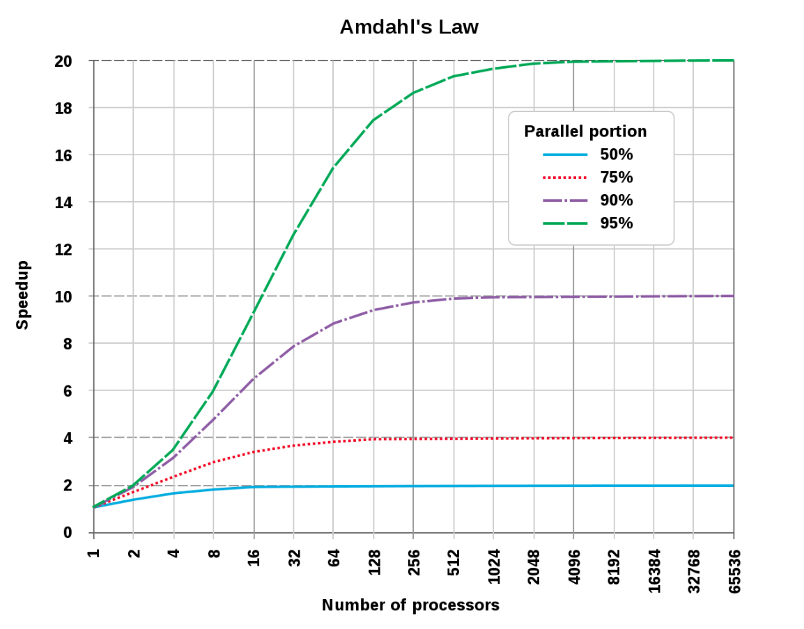
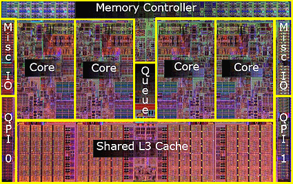
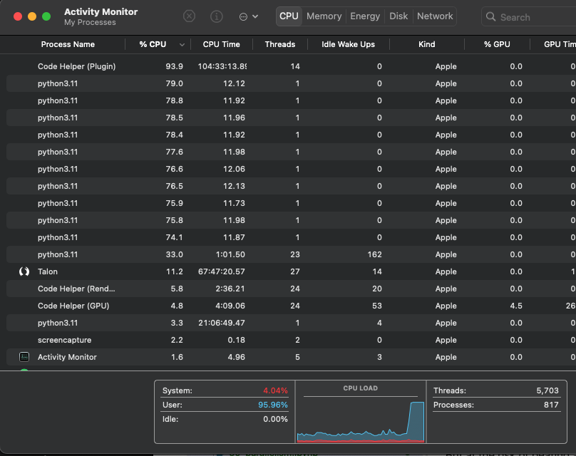

Parallel Computing#
Before you dive into this, let me just tell you the punchline of this entire page right up front: parallelism is the last tool you want to turn to for speed. It is not a silver bullet, it will generally take you significant time to implement, the speed improvements from parallelism are generally much smaller than what you get from other performance improvement methods (see Understanding Performance and Performance Solutions), and the headaches of parallelizing code are many.
What is Parallelism#
Parallelism is the process of:
taking a single problem,
breaking it into lots of smaller problems,
assigning those smaller problems to a number of processing cores that are able to operate independently, and
recombining the results.
As this list shows, parallelism is not easy, and so not only does it take substantial developer time (the time it takes you to implement it), but there are computer-time costs to breaking down problems, distributing them, and recombining them, often limiting the returns you will see to parallelism.
Why is Paralleism important?#
Given all that, why is parallelism all the rage?
The simple answer is that, when it comes to running a serial program (a problem where you run your code in sequence, one step at a time), processors stop getting faster in about the mid-2000s.
This might surprise you. Most of us have heard that Moore’s Law dictates that processors are doubling in performance every 18 months. The reality, however, is more complicated.
Moore’s law used to apply to a number of aspect of processors: the size of transistors, the number of transisters, and the speed that a processor executed serial code. But as shown in the figure below, processor frequency and the speed of serial execution stopped this pattern of doubling in the mid-2000s (serial execution has still been making small gains since then, but even that is iffy – those improvements are due to little hacks that only work when programs work in just the right way).

Source: karlrupp.net
And so since chip makers have lost the ability to make their processors faster, they’ve turned to just giving us more and more processors in the form or more “cores”: components of chips that are capable of independent operation. And leveraging the availability of massive numbers of cores (either in single machines, or for huge datasets, across lots of computers) has become the only place left to go for performance!
Theoretical Limits of Parallelism#
OK, now let’s talk about the theoretical limits of parallelism.
The biggest problem with parallelism is that it’s very hard to break some problems into smaller pieces you can work on simultaneously. Somethings you do on computers are fundamentally serial / sequential, and thus cannot be broken up.
For example, suppose you want to simulate how weather evolves over time. The only way to simulate how weather will evolve on day 2 of your simulation is to wait till you’ve finished simulating day 1 so you can use those results as the starting point for your simulation in day 2. That means there’s no way to fully parallelize a weather simulation, since the results at time \(t\) will always depend on the results generated at time \(t-1\).
To be clear, this is not to say there are no opportunities to speed up weather simulations – since you generally run weather simulations over and over and then look at the average prediction, each separate simulation can be parallelized. But it does mean that even if you had infinite processors, you couldn’t bring the time it takes to simulate the weather down to zero because you’d have to finish simulating day 1 before you can simulate day 2.
Amdahl’s Law#
The formalization of this idea is what’s called Amdahl’s Law, which gives the theoretical limits of parallelization. If \(P\) is the proportion of your algorithm that can be parallelized, and \(N\) is the number of cores available, the fundamental limit to the speed-up you can get from parallelization is given by:
Which also means that even with infinite cores, you can’t get past the speedup limit of:
Expressed graphically, this is:

Source: Wikipedia
As this figure shows, even for a task that is 95% parallelizable, the biggest possible performance gain you will ever get (with infinite cores), even ignoring any real-world overheads required to execute that parallelization is 20x.
Now, to be clear, that doesn’t mean there aren’t situations where the best strategy is parallelism. If you’ve exhausted all your other opportunities to speed up your code, parallelism may be all that’s left. And in data science, it’s not uncommon to have code that can be much more than 95% parallelizable – for example, if you need to run a simulation 1,000,000 times, and each run is relatively short, you can get close to 100% parallelizable. But the point is that parallelism is no silver bullet, and it’s important to think hard about whether your problem is suited to parallelizing before you invest in trying to parallelize your code!
Vocabulary#
The terms processor and core are often used interchangeably among computer scientists to refer to “units capable of independent operation”. This can be confusing because most of us think of a “processor” as a single square piece of silicone material that is plugged into our motherboard (e.g. an Intel i9, or an Intel i7):
But what most of us think of as processors today often have many cores (the Intel i9 on my laptop has 8 cores, each capable of working relatively independently). Here’s a labeled image of the inside of a core i7 processor with four distinct “cores”:

And while most of us refer to the chip as a processor, and these cores as… cores, computer scientists have a tendency to use the term “processors” and “core” interchangeable to refer to what most of us call “cores”.
And the question of “how many processors / cores do I have” gets even more confusing for two reasons:
First, many desktops have two separate chips (i.e. two Intel i7s, or two Intel i9s), leading some people to call these multi-processor machines. :/
Second, many modern processors (especially Intel processors) have a feature called “hyperthreading”, which is where two tasks can be assigned to the same individual core. That core can’t do both tasks at the same time, but it can try and switch between them efficiently. For example, if the first task stalls out while it’s waiting to get more data from memory (remember how slow memory is), the core can switch to working on the second task instead of just sitting around. This can offer additional performance, but much less than actually having an actual additional independent core, and actual performance depends on the nature of the job being run (I’ve heard data science people say if two cores gets you 2x performance, then hyperthreading gets you about 1.25x performance, which seems roughly consistent with my experience. But again this depends hugely on the nature of the job you’re parallelizing).
An Example: Parallel Processing with Joblib#
We won’t get into really sophisticated parallel processing in this tuturial – writing parallelized code is a discipline unto itself – be we can do a little “embarassingly parallel” computing.
An “embarassingly parallel” task is one where each component of your parallel job is entirely independent of every other part. For example, consider the weather simulation we discussed above – while Day 2 is not independent of Day 1, each attempt to simulate 7 days of weather is fully independent from every other run, making it embarassingly parallel.
So let’s develop an embarassingly parallel simulation, and run it in parallel using the Joblib library (FYI: R has an analogous library called foreach).
First, let’s develop a dumb little weather simulation with a central tendency so the temperature tomorrow is the function of some anchor temperature (let’s say 72 degrees farenheit) and the realized temperature today (so if it’s hot today, it’s likely to be hot tomorrow, but if it’s above the long-term average of 72, it’s also likely to be closer to 72 than the temp today).
import numpy as np
import numpy.random as npr
def weather_at_t_plus_one(temp_at_t, std_dev):
return npr.normal((72 + temp_at_t) / 2, std_dev)
def simulate_weather(starting_temp, weather_std_dev, steps):
weather_at_time_t = starting_temp
for i in range(steps):
weather_at_time_t = weather_at_t_plus_one(weather_at_time_t, weather_std_dev)
return weather_at_time_t
simulate_weather(72, 5, 10)
70.61450161946645
Now suppose we want to see what the weather is likely to be like in 10 days. Even if this simulation were realistic, we wouldn’t be able to answer that question by just running it once, since every time we run the simulation we get different data. Instead, we want to run the simulation over and over and look at the distribution of outcomes.
The simpliest way to do this would be with a little for-loop:
%%time
results = []
for run in range(5_000_000):
results.append(simulate_weather(75, 5, 10))
CPU times: user 22.9 s, sys: 205 ms, total: 23.1 s
Wall time: 23.1 s
np.mean(results)
72.00268780953319
But look how slow this is! If we want to run this 5,000,000 times, it takes a full 23 seconds on average!
So let’s try parallelizing these simulations using joblib. (Make sure to install joblib if you haven’t yet with conda or pip!)
from joblib import Parallel, delayed # Import the relevant tools
# Joblib wants a function that only takes a single argument.
# Since we're not changing our parameters with each run, we just create a
# "little barrier function" that takes one argument.
def run_simulation(i):
return simulate_weather(75, 5, 10)
results = Parallel(n_jobs=10)(delayed(run_simulation)(i) for i in range(5_000_000))
np.mean(results)
72.00074577195855
And that’s it!
OK, so that line of code is kinda inscrutible, so let’s unpack it:
Parallel(n_jobs=10): this is where you specify how many processes you want to spin up. You don’t want to parallelize to more logical cores than are available on your computer (generally, two times the number of physical cores on your computer if you have an Intel chip). If you try and parallelize to 4 cores but your computer only has 2, then your operating system will just keep forcing your cores to stop and switch from running one pair of processes to running the other pair, back and forth, and that switching takes time. To see how many cores you have, run:
import os
os.cpu_count()
10
delayed(run_simulation)(i) for i in range(1000000): This specifies what you want executed on all these parallel processes. In this case, we’re saying “we want to execute the function run_simulation with the argument i for all values of i from 0 to 5,000,000.
So that’s all you have to type, but that kinda obscures what all is happening.
When you run this code, here’s what happens:
Joblib starts up as many new Python sessions as you hnave specified in
n_jobs. These are fully independent, just as though you had openned a bunch of new terminal windows and typed Python into each one.Joblib then passes each of these separate processes the function (in this case
run_simulation) you want to run. Remember because each process is it’s own unique and beautiful snowflake, it doesn’t know what your current Python session knows! Joblib will also pass data to these processes if your job uses data. That means that if, instead of just an index likei, you were passing a dataframe in as an argument, Joblib would make a new copy of your dataframe in everyone one of these processes (which means if your dataframe takes up 30% of your RAM, and you try and parallelize over 8 processes, you’re run out of memory when joblib makes 8 copies!).Joblib then starts telling these processes to run your function (
run_simulation) for different values ofi. It takes care of making sure that all yourivalues run somewhere.Then when each process finishes running
run_simulation(i), it passes the results back to joblib in your primary process, and puts them in a list.Then when all values of
ihave been used,joblibcloses all those processes.
So, how much speed benefit does this get us? Previously we saw that running our simulation 1 million times took approximately 24 seconds to run. Let’s see how it looks with a 10 core parallelization (note my computer has 8 physical cores, so we’re using a little hyperthreading. I’m just doing 10 since the math is easy. :)).
%%time
results = Parallel(n_jobs=10)(delayed(run_simulation)(i) for i in range(5_000_000))
CPU times: user 9.83 s, sys: 397 ms, total: 10.2 s
Wall time: 10.8 s
np.mean(results)
72.00607146863169
10 seconds!
Yeah…
So this is what I mean about parallel processing: there’s a lot of fixed costs to getting this independent processes running and passing things back and forth, as a result of which the benefits of parallelism are almost always sub-linear (i.e. using 10 processors instead of 1 will result in <10x speedups).
Now to be clear, the benefits won’t always be so small. Since the “cost” of setting up these processes is pretty constant, the longer each simulation runs, the larger the gains. For example, let’s compare performance if we simulate for 100 days instead of 10 (so there are more actual simulation steps taking place for each message passed back and forth between processes).
%%time
results = []
for run in range(5_000_000):
results.append(simulate_weather(75, 5, 100))
CPU times: user 3min 38s, sys: 1.58 s, total: 3min 39s
Wall time: 3min 40s
%%time
def run_simulation(i):
return simulate_weather(75, 5, 100)
results = Parallel(n_jobs=10)(delayed(run_simulation)(i) for i in range(5_000_000))
CPU times: user 12.6 s, sys: 460 ms, total: 13.1 s
Wall time: 32.7 s
Much better. From 200 seconds to 32 seconds. But still that’s only a 5x speed up with 10 cores!
By the way, if you want to see the parallelism in action, you can look at your Activity Monitor (mac) or Resource Monitor (Windows). Here’s mine while that is running:

But at the risk of beating a dead horse, we can get far better performance benefits just by using the tips in the performance section like vectorizing:
import numpy as np
import numpy.random as npr
%%time
sims = np.zeros((5_000_000, 100))
std_dev = 5
sims[:, 0] = 72
for i in range(1, 100):
sims[:, i] = npr.normal((sims[:,i-1] + 72)/2, 5)
CPU times: user 14.4 s, sys: 745 ms, total: 15.2 s
Wall time: 15.3 s
np.mean(sims[:, 99])
71.99910598147939
THAT only took 15 seconds…
Multi-processing versus Multi-threading#
This type of parallelism – where we create entirely new processes to run our code, and we have to copy over our data to each new process – is what’s called “multiprocessing”. Multiprocessing is nice because (a) you can use it on big server clusters where different processes may be running on different computers, and (b) it’s quite safe. As a result, most parallelism you’re like to encounter will be multi-processing.
However, there is another type of parallelism to be aware of called multi-threading. In multi-threading, all the code being run (each sequence execution of which is called a “thread”) exists within a single process, meaning that all the different threads have access to the same objects in memory. This massively reduces duplication because you don’t have to copy your code and data and pass it around – all the threads can see the same parts of memory.
But multi-threading has three major shortcomings:
It is very easy to run into very subtle but profound problems that lead to corruption (the biggest of which is something called Race Conditions).
Multi-threading can only distribute a job over the cores on a single computer, meaning it can’t be used to distribute a job over hundreds of cores in a large computing cluster.
You generally can’t use multi-thread parallelism in Python because of a fundamental component of its architecture (the GIL).
So… multi-threading isn’t something you’re like likely to try and implement yourself. But if you do need to get into multi-threading, consider jumping to a language like Julia, which allows for easy multi-threading, complete with security features.
But that isn’t to say you may not benefit from multi-threading. More and more tools are implementing parallelism (even Python packages, by building in the multi-threading into the C code that underlies that package you use in Python), so you may just get some benefits for free!
GPU Parallelism#
Something related to general parallelism is GPU parallelism. GPU parallelism is the practice of using Graphical Processing Units (GPUs) to do extremely parallel computing.
GPUs are basically computers onto themselves designed for the sole purpose of, as the name suggests, processing graphics. As it turns out, however, most of what one does when processing graphics is lots of matrix algebra. And so in recent years researchers, have started using GPUs for scientific research.
GPU processors aren’t “general purpose” processors – they only do a few things, and as a result of that specialization, what they do they do fast. Moreover, they are massively parallel: while your CPU (your Intel chip) may have ~4-8 cores, a modern GPU has either hundreds or thousands of cores.
But because GPUs are basically computers onto themselves, to use them you have to write special code to both manage all those cores and also manage the movement of data from your regular computer to the GPU. All of which is to say: you probably won’t write your own GPU parallel algorithm, but if you end up in an area that uses them a lot (i.e. training neural networks), the libraries you use will.
Parallelism and Distributed Computing#
In this reading, we’ve mostly focused on discussing the principles of parallelism – the goal, the fundamental problems, and some basic examples of parallelism.
In a future class, we’ll discuss some packages that are designed to make parallelism as easy as possible in situations where you really need parallelism. In particular, we’ll focus on tools for distributed computer: situations where you don’t just want to parallelize across the cores in your computer, but across many computers (e.g. in the cloud). But when we get to these tools – like pyspark and dask – try to keep in mind the lessons we’ve learned here, because everything you’ve learned here applies to those packages as well!